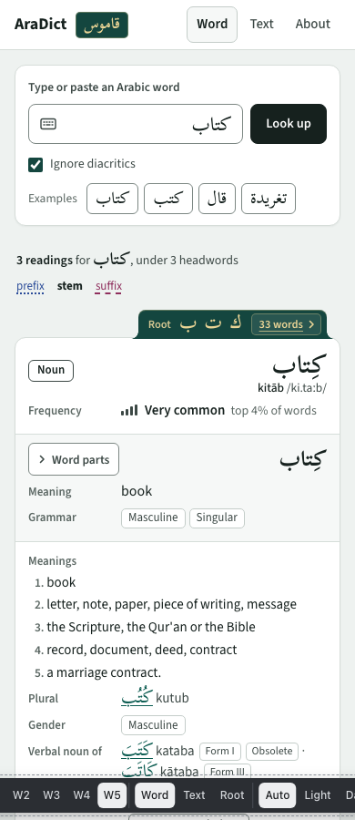

W5 · Question order
recommended1. Which word: headword, part of speech, transliteration under it, frequency, root tab. 2. What you typed means: each reading's meaning and grammar. 3. About the headword: all meanings, then plural, gender, verbal nouns, other forms, regional pronunciations, and the credit.